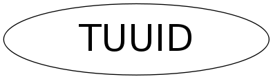

class TUUID
TUUID This class defines a UUID (Universally Unique IDentifier), also known as GUIDs (Globally Unique IDentifier). A UUID is 128 bits long, and if generated according to this algorithm, is either guaranteed to be different from all other UUIDs/GUIDs generated until 3400 A.D. or extremely likely to be different. UUIDs were originally used in the Network Computing System (NCS) and later in the Open Software Foundation's (OSF) Distributed Computing Environment (DCE). Structure of universal unique IDs (UUIDs). Depending on the network data representation, the multi- octet unsigned integer fields are subject to byte swapping when communicated between dissimilar endian machines. | low 32 bits of time | 0-3 .fTimeLow +-------------------------------+---- | mid 16 bits of time | 4-5 .fTimeMid + | vers. | hi 12 bits of time | 6-7 .fTimeHiAndVersion |Res | clkSeqHi | 8 .fClockSeqHiAndReserved | clkSeqLow | 9 .fClockSeqLow + | node ID | 10-15 .fNode The adjusted time stamp is split into three fields, and the clockSeq is split into two fields. The timestamp is a 60-bit value. For UUID version 1, this is represented by Coordinated Universal Time (UTC/GMT) as a count of 100-nanosecond intervals since 00:00:00.00, 15 October 1582 (the date of Gregorian reform to the Christian calendar). The version number is multiplexed in the 4 most significant bits of the 'fTimeHiAndVersion' field. There are two defined versions: MSB <--- Version 4-Bit Code Description | 1 0 0 0 1 DCE version, as specified herein. | 2 0 0 1 0 DCE Security version, with | embedded POSIX UIDs. | 3 0 0 1 1 node id is a random value Clock Sequence The clock sequence value must be changed whenever: The UUID generator detects that the local value of UTC has gone backward; this may be due to re-syncing of the system clock. While a node is operational, the UUID service always saves the last UTC used to create a UUID. Each time a new UUID is created, the current UTC is compared to the saved value and if either the current value is less or the saved value was lost, then the clock sequence is incremented modulo 16,384, thus avoiding production of duplicted UUIDs. The clock sequence must be initialized to a random number to minimize the correlation across system. This provides maximum protection against node identifiers that may move or switch from system to system rapidly. Clock Adjustment UUIDs may be created at a rate greater than the system clock resolution. Therefore, the system must also maintain an adjustment value to be added to the lower-order bits of the time. Logically, each time the system clock ticks, the adjustment value is cleared. Every time a UUID is generated, the current adjustment value is read and incremented, and then added to the UTC time field of the UUID. Clock Overrun The 100-nanosecond granularity of time should prove sufficient even for bursts of UUID production in the next generation of high-performance multiprocessors. If a system overruns the clock adjustment by requesting too many UUIDs within a single system clock tick, the UUID generator will stall until the system clock catches up.
Function Members (Methods)
public:
| TUUID() | |
| TUUID(const char* uuid_str) | |
| TUUID(const TUUID&) | |
| virtual | ~TUUID() |
| const char* | AsString() const |
| static TClass* | Class() |
| Int_t | Compare(const TUUID& u) const |
| void | FillBuffer(char*& buffer) |
| TInetAddress | GetHostAddress() const |
| TDatime | GetTime() const |
| void | GetUUID(UChar_t* uuid) const |
| UInt_t | GetUUIDNumber() const |
| UShort_t | Hash() const |
| virtual TClass* | IsA() const |
| TUUID& | operator=(const TUUID&) |
| void | Print() const |
| void | ReadBuffer(char*& buffer) |
| void | SetUUID(const char* uuid_str) |
| void | SetUUIDNumber(UInt_t index) |
| virtual void | ShowMembers(TMemberInspector& insp) |
| Int_t | Sizeof() const |
| virtual void | Streamer(TBuffer& b) |
| void | StreamerNVirtual(TBuffer& b) |
| void | StreamerV1(TBuffer& b) |
protected:
| Int_t | CmpTime(TUUID::uuid_time_t* t1, TUUID::uuid_time_t* t2) |
| void | Format(UShort_t clockseq, TUUID::uuid_time_t ts) |
| void | GetCurrentTime(TUUID::uuid_time_t* timestamp) |
| void | GetNodeIdentifier() |
| void | GetRandomInfo(UChar_t* seed) |
| void | GetSystemTime(TUUID::uuid_time_t* timestamp) |
| void | SetFromString(const char* uuid_str) |
Data Members
protected:
| UChar_t | fClockSeqHiAndReserved | high 6 clock bits + 2 bits reserved |
| UChar_t | fClockSeqLow | low 8 clock bits |
| UChar_t | fNode[6] | 6 node id bytes |
| UShort_t | fTimeHiAndVersion | high 12 time bits + 4 UUID version bits |
| UInt_t | fTimeLow | 60 bit time, lower 32 bits |
| UShort_t | fTimeMid | middle 16 time bits |
| UInt_t | fUUIDIndex | !index in the list of UUIDs in TProcessUUID |
Class Charts
{kind=link}
{kind=link}
{kind=link}
{kind=link}

Function documentation
void SetFromString(const char* uuid_str)
TUUID(const char* uuid_str)
void StreamerV1(TBuffer& b)
Stream UUID from input buffer. This function is for the exclusive use of TDirectory::Streamer() to read a non-versioned version of TUUID.
void Format(UShort_t clockseq, TUUID::uuid_time_t ts)
Make a UUID from timestamp, clockseq and node id.
void GetCurrentTime(TUUID::uuid_time_t* timestamp)
Get current time as 60 bit 100ns ticks since whenever. Compensate for the fact that real clock resolution is less than 100ns.
void GetSystemTime(TUUID::uuid_time_t* timestamp)
Get system time with 100ns precision. Time is since Oct 15, 1582.
void GetNodeIdentifier()
Get node identifier. Try first to get network address, if no network interface try random info based on some machine parameters.
const char * AsString() const
Return UUID as string. Copy string immediately since it will be reused.
Int_t Compare(const TUUID& u) const
Compare two UUIDs "lexically" and return -1 this is lexically before u 0 this is equal to u 1 this is lexically after u
TInetAddress GetHostAddress() const
Get address of host encoded in UUID. If host id is not an ethernet address, but random info, then the returned TInetAddress is not valid.
void SetUUID(const char* uuid_str)
TUUID()